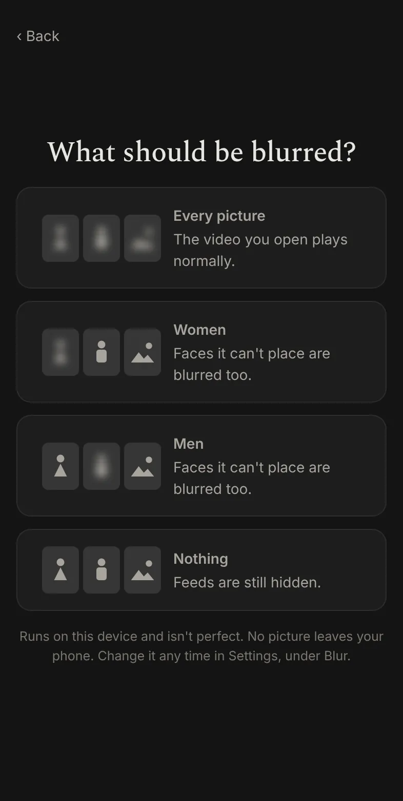

A calmer way to browse.
tamescroll opens any site and quietly tames the busy ones. Endless feeds fold away, and pictures can be blurred right on your phone. You get to what you came for, and the rest stays quiet.

Everything a browser does, minus the pull.
Search, type an address, open a link from a friend. tamescroll works like the browser you know, with a gentle layer on top.
Feeds fold away
On the busy sites we tame, the endless feed, short-video shelves and "recommended for you" rows are hidden. Bring back any of them, per site, with one switch.
Pictures, your way
Choose what gets blurred: every picture, women, men, or nothing. It all runs on your phone, so no picture is ever sent anywhere. It isn't perfect, and we say so.
Private by default
Searches go to DuckDuckGo with safe search set to strict. Trackers are blocked as you browse, and each site has its own switch for ads.



Night or Paper. Normal or larger text.
Two looks, picked by tapping a picture of each. Night is dark and quiet. Paper is warm and light, with bigger type for older eyes and bright rooms.
- Your sites, your order. Add the sites you use as tiles; we never suggest one.
- Bring back what you like. Comments, subscriptions and search stay a switch away.
- A shield on every page shows what was hidden there, with a count.
Responsible by design.
- Everything happens on your phone. Nothing you see is copied, saved or sent to us. We have no server, no accounts and no analytics.
- Sites stay themselves. tamescroll shows each site's own web page and changes only how it looks on your screen, like a reader mode or a content blocker. It never touches anyone's app or code.
- Videos play as published. Blur is a layer drawn over your screen. The video you choose to watch is never edited.
- The picture filter keeps nothing. It looks, decides whether to blur, and forgets. It does not identify anyone or store faces.
- Your accounts stay yours. You sign in on each site's own page, and its own terms apply as they always have.
- Open source. Free, MPL-2.0, built in the open. Nothing to buy, nothing to subscribe to.
tamescroll is an independent, open-source project. It is not affiliated with or endorsed by any site it works with; their names are used only to say which sites it works with. If you represent a site and have a concern, write to us and we will answer. See our privacy policy and terms of use.
Try tamescroll.
Android today. Desktop and iPhone are being built.
Android 7 and newer. Your phone asks once to allow installs from this source.